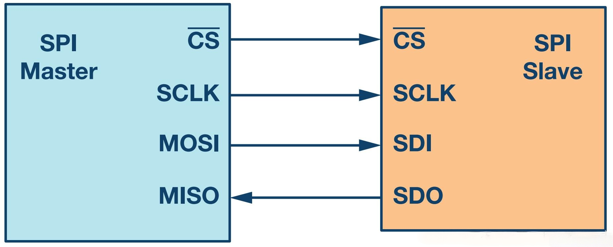
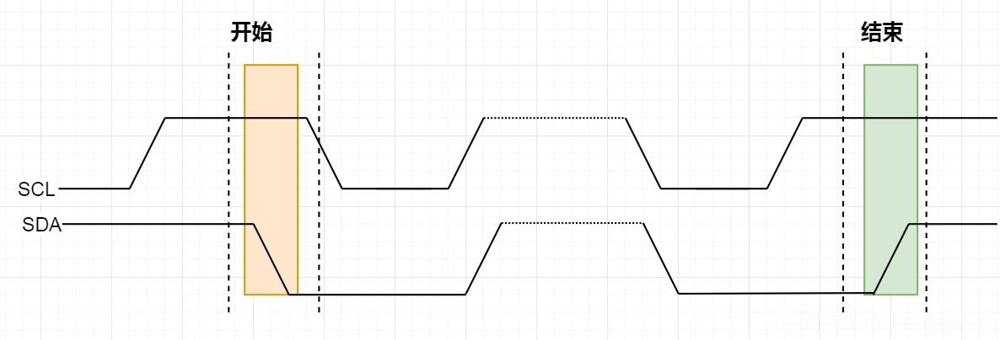
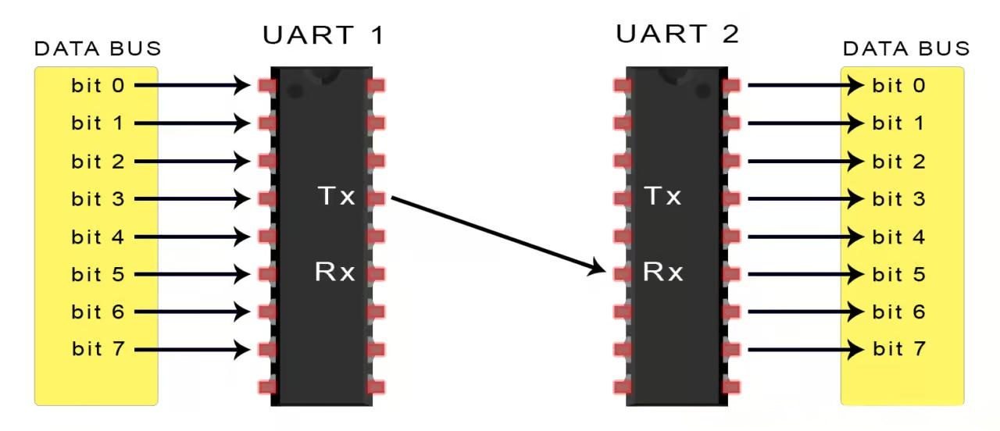

本文介绍嵌入式领域常用的SPI、I2C、UART三种串行通信协议。SPI为同步协议，通信速度快、支持全双工，但引脚占用多；I2C仅需两引脚，支持多主多从和仲裁机制，速率较慢；UART为异步协议，电路简单、通信距离长，依赖波特率匹配且速率低。三者均采用串行传输，适用于嵌入式设备通信，需根据传输速率、硬件资源、通信距离等需求选择。
SPI、I2C、UART：串行通信协议的 “三剑客”
在嵌入式系统和电子设备的通信领域，SPI、I2C 和 UART 是三种极为常见的串行通信协议，它们各自有着独特的特点和适用场景，犹如通信世界的 “三剑客”，在不同的战场上各显神通。
一、SPI
工作原理

SPI 是一种同步通信协议，采用主从模式，通常有四个引脚：MOSI（主设备数据输出，从设备数据输入）、MISO（主设备数据输入，从设备数据输出）、SCK（时钟信号，由主设备提供）和 SS（从设备选择信号，用于选择特定的从设备）。主设备通过 SCK 发出时钟信号，在时钟信号的驱动下，数据通过 MOSI 和 MISO 进行传输。
优点
-
通信速度极快，在硬件层面能达到较高的数据传输速率，适合大数据量的快速传输场景，如存储设备与处理器之间的数据交换。
-
可以同时支持全双工通信，主设备和从设备可以同时发送和接收数据，极大地提高了通信效率。
缺点
-
需要较多的引脚，除了数据线和时钟线，每个从设备还需要一个独立的 SS 引脚，当从设备数量较多时，会占用大量的引脚资源，增加了硬件设计复杂度。
-
对总线的控制相对复杂，需要严格管理时钟信号和从设备选择信号，以确保数据传输的准确性。
二、I2C
工作原理

I2C 也是一种同步通信协议，采用主从模式，仅使用两条引脚：SDA（数据线）和 SCL（时钟线）。主设备通过发送起始信号来启动通信，在 SCL 时钟信号的控制下，数据在 SDA 线上传输，每个从设备都有唯一的地址，主设备通过发送从设备地址来选择要通信的从设备。
优点
-
引脚数量少，只需要两条引脚，大大节省了硬件资源，便于在空间受限的设备中使用，如小型传感器与微控制器之间的通信。
-
支持多主多从通信，在一条 I2C 总线上可以连接多个主设备和多个从设备，具有很强的灵活性，能够构建复杂的通信网络。
-
具有完善的仲裁机制，可以有效地避免多个主设备同时发起通信时的数据冲突，提高了系统的可靠性。
缺点
-
通信速度较 SPI 较慢，数据传输速率有限，在传输大数据量时效率较低，通常适用于低速率通信场景，如传感器数据采集和设备配置等。
-
由于是半双工通信，同一时刻数据只能在一个方向上传输，主设备和从设备不能同时发送和接收数据，通信效率相对较低。
三、UART
工作原理

UART 是一种异步通信协议，没有公共的时钟信号，通过在数据的开始和结束处添加起始位和停止位来标识数据的传输。它通常有两个引脚：TX（数据发送）和 RX（数据接收），发送方将数据按照一定的波特率（数据传输速率）发送出去，接收方根据相同的波特率来接收数据。
优点
-
电路简单，无需时钟信号线，硬件设计相对简单，降低了硬件成本和复杂度，在一些简单的通信场景中易于实现，如调试信息的输出和简单的设备间通信。
-
通信距离相对较长，在适当的波特率下可以实现较远距离的数据传输，适用于一些对通信距离有一定要求的应用场景，如工业控制和远程通信等。
缺点
-
由于是异步通信，没有统一的时钟信号，数据传输的准确性在一定程度上依赖于发送方和接收方的波特率匹配，如果波特率存在偏差，可能会导致数据错误。
-
数据传输速率相对较低，通常无法满足高速数据传输需求，一般适用于低速率、长距离的通信场景。
四、共同点
-
都是串行通信协议 ：它们都采用串行传输方式，数据一位一位地在通信线路上进行传输，这使得它们在硬件资源占用上相对并行通信更少，适合在有限的空间和资源下进行数据通信，降低了硬件成本和复杂度。
-
适用于嵌入式系统和电子设备 ：在嵌入式系统和各种电子设备中都有广泛的应用，如微控制器与传感器、存储器、显示器等外围设备之间的通信，为设备之间的数据交互提供了灵活高效的解决方案。
-
具有主从模式 ：SPI 和 I2C 明确采用主从模式进行通信，UART 通常也可以在主从模式下工作，其中发送方可以看作是主设备，接收方是從设备，在一定程度上便于对通信过程进行管理和控制。
五、总结
SPI、I2C 和 UART 各自有着独特的优势和局限性，在实际应用中，我们需要根据具体的需求和场景来选择合适的通信协议。如果需要高速、大数据量的传输，SPI 可能是最佳选择；在对硬件资源要求高、多设备通信场景下，I2C 则更具优势；而对于简单的、长距离的低速率通信，UART 可以满足要求。了解它们的区别和共同点，有助于我们在嵌入式开发和电子设备设计中做出明智的选择，实现高效、可靠的数据通信。